Coca-Cola
Campus Messaging
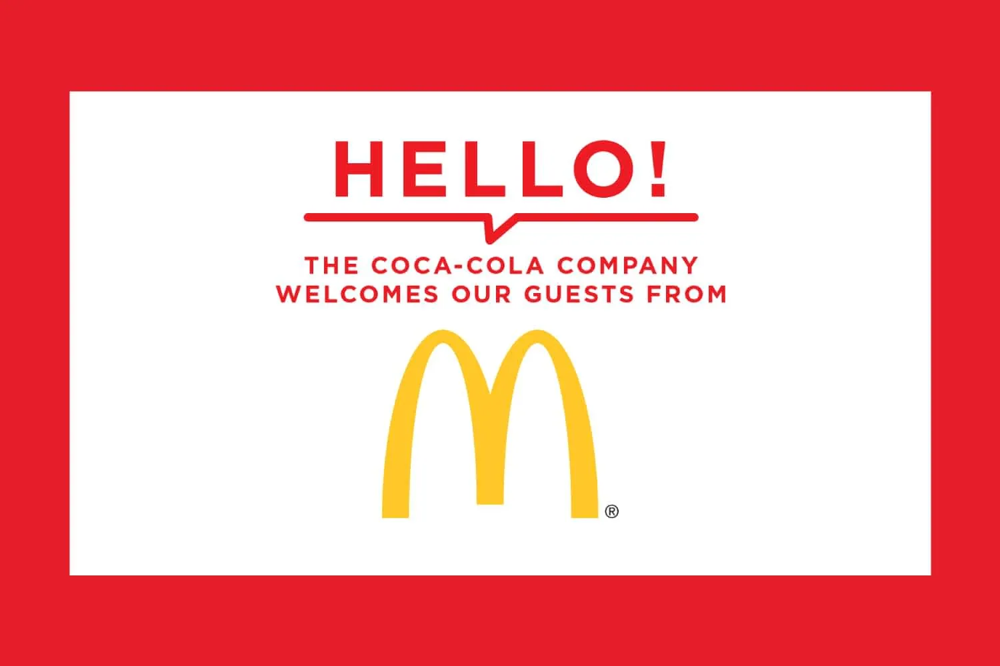
Coca-Cola's world headquarters in Atlanta spans multiple buildings and serves thousands of employees daily. When I joined the campus communications team, digital signage across the campus had grown organically — each screen type had its own look, with no shared visual language tying them together.
I designed a unified system of digital displays that brought consistency to every touchpoint employees encountered throughout their day — from the moment they arrived on campus to the screens outside their meeting rooms.
Welcome Displays
Large-format lobby screens greeted employees and visitors with branded welcome messages, campus announcements, and event promotions. These were the first impression of the campus each morning.
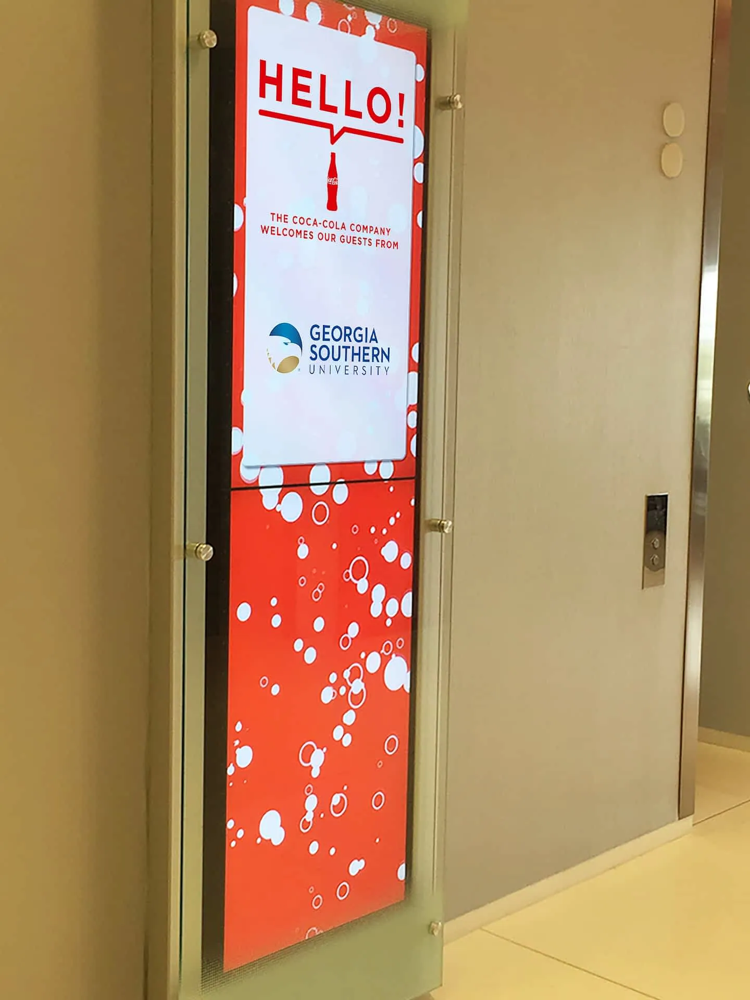
Traffic & Transportation
Real-time traffic conditions and campus shuttle schedules were displayed at building exits, helping employees plan their commute and navigate between buildings.
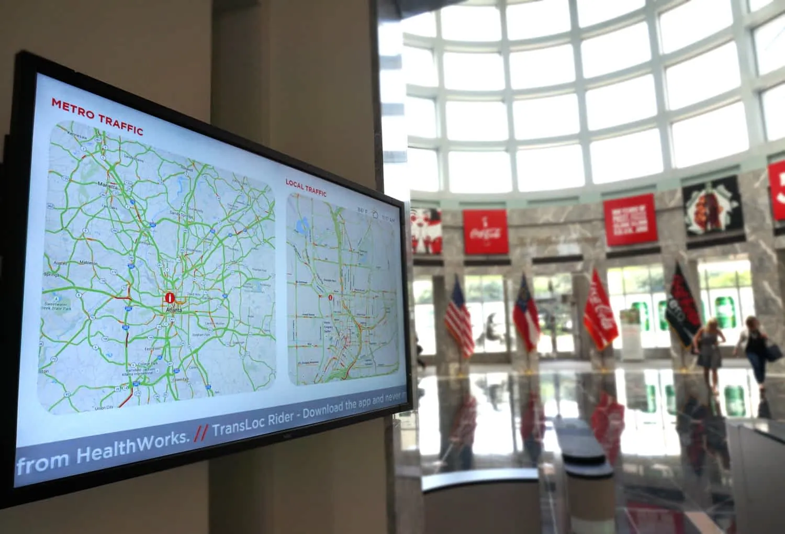
Meeting Rooms & Credit Union
The same visual system scaled down to smaller touchpoints — conference room door screens showing real-time booking status, meeting marquees, and digital signage for the on-campus credit union branch.
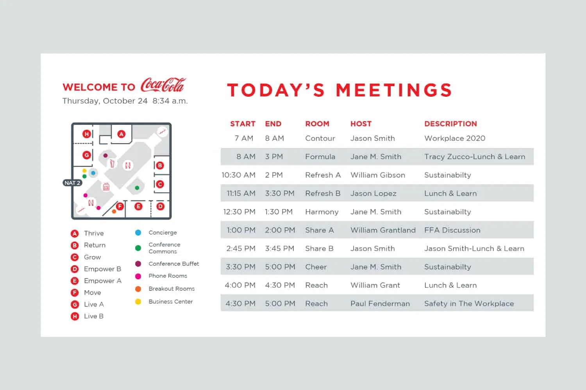
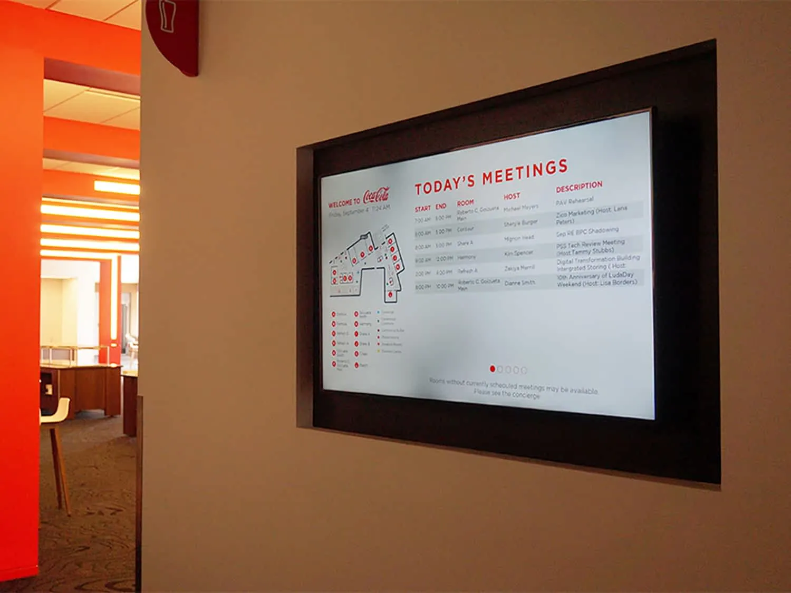
Environmental Graphics
Large-scale vinyl wall graphics installed throughout campus corridors and common areas, extending the sensations of enjoying a Coke into a visual experience.
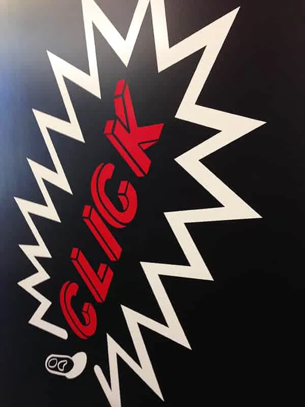
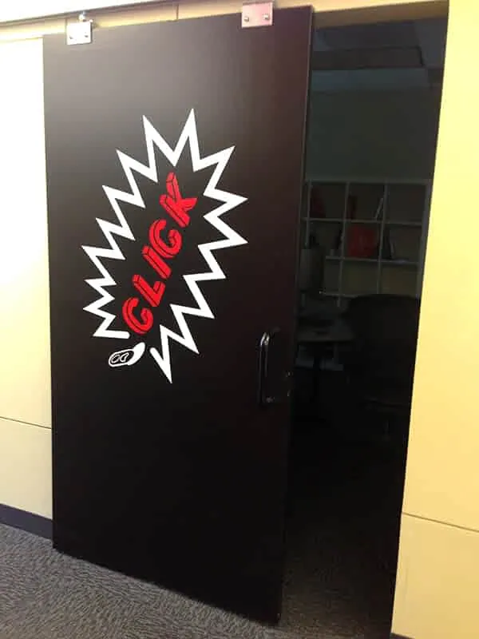
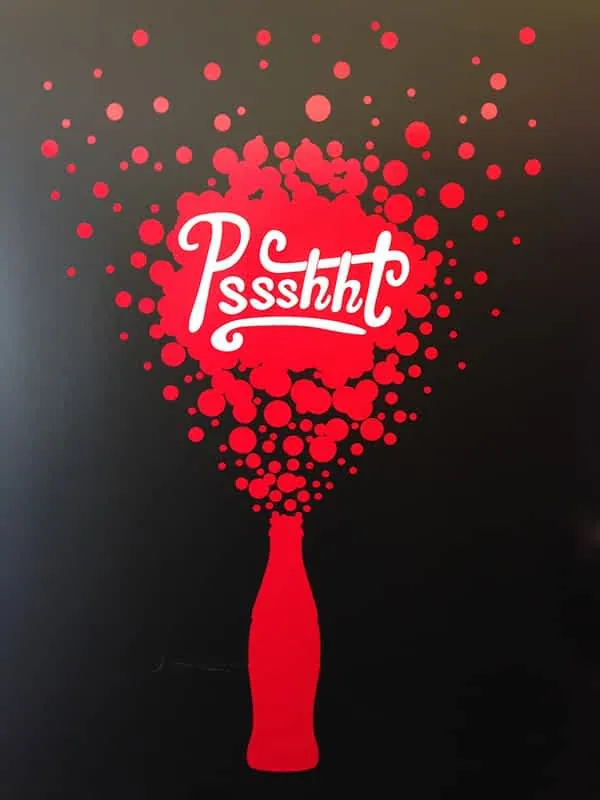
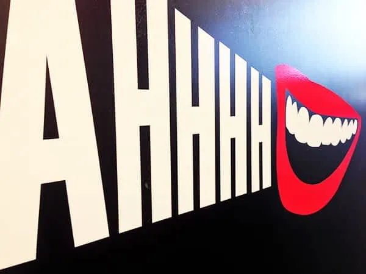
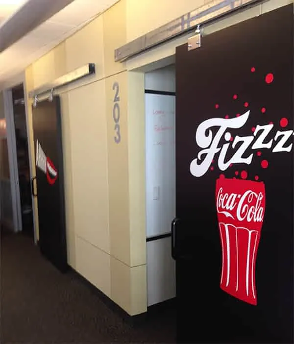
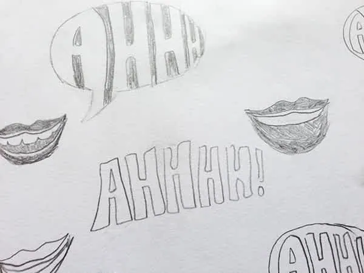
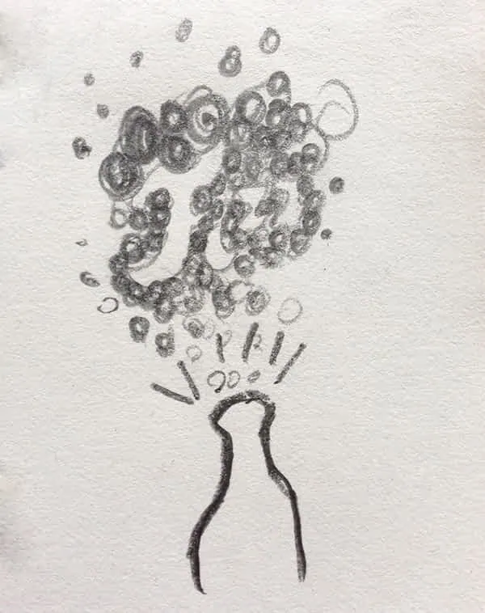
Coca-Cola Dining
Coca-Cola Dining digital menu screens. Breakfast and lunch menus were created for six new dining venues around the Coca-Cola Company's campus. Each venue needed its own unique look, based on the cuisine served, while still being a part of the larger Coca-Cola Dining system.